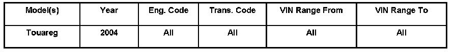

Interior - Rear Seat Arm Rest Lid Appears Broken
ConditionRear Seat Armrest Lid, Disengaged from Armrest

68 06 02 Nov. 17, 2006, 2005388, Supersedes Technical Bulletin Group 68 number 03-01 dated Aug.1, 2003 due to inclusion into ElsaWeb.
Technical Background
When an object interferes with closing the lid, it may cause the lid to break away from the armrest.
Production Solution
No production change required.
Service
Do not replace armrest for this condition.
This is a break-away feature of the armrest lid and is designed to help eliminate damage to the armrest lid or object in the event that the lid is closed on the object.
- Remove cup holder insert.
- Reposition armrest lid onto hinges and snap into place.
- Ensure armrest lid opens and close properly.
- Reinstall cup holder insert.
Warranty
Information only.
Required Parts and Tools
No Special Tools required.
No Special Parts required.Always see ETKA for the latest part(s) information.